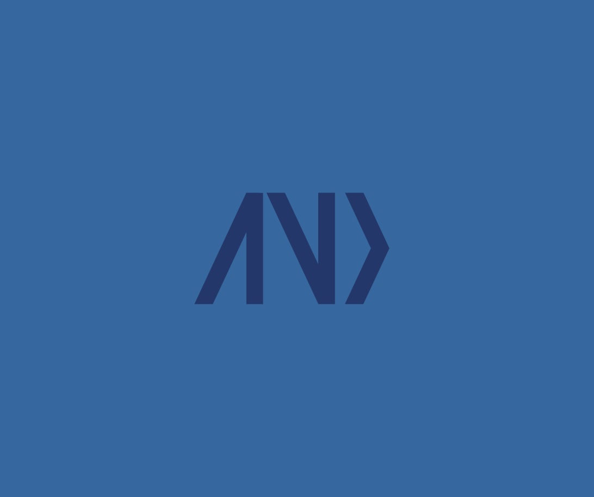

Artifact 01
Portfolio Website
A responsive, accessible portfolio that will hold every artifact I build in TCSS 490 this quarter.
Overview
The goal of this artifact was to build and deploy a small front-end portfolio site with the help of an AI assistant. The site is based on my earlier design portfolio: it keeps the same hero, project carousel, about and contact sections, with a cleaner layout and a single card for each of the five course artifacts.
